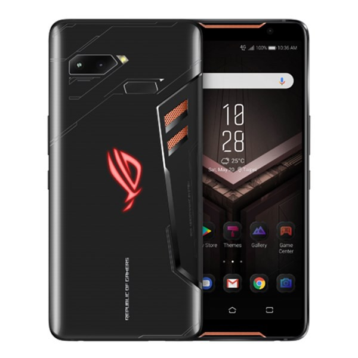
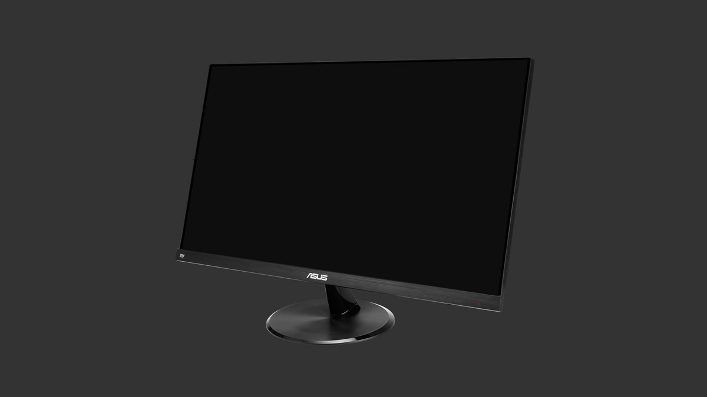

Harga: Rp.10.000.000
Spesifikasi:
Processor:Intel Core i7-10510U
Memory:8 GB DDR4
Storage:512 GB SSD
GPU:Nvidia GeForce MX350 2 GB
Display:14.0-inch Full HD
Operational System:Windows 10 Home
Other:WiFi, Bluetooth, Webcam
Warna Silver

Harga: Rp.8.000.000
Spesifikasi:
Asus ROG Phone merupakan handphone HP dengan kapasitas 4000mAh
layar 6" yang dilengkapi dengan kamera belakang 12 + 8MP dengan tingkat densitas piksel sebesar 402ppi
tampilan resolusi sebesar 1080 x 2160pixels
Dengan berat sebesar 200g, handphone HP ini memiliki prosesor Octa Core

Harga: Rp.2.500.000
Spesifikasi:
Panel Size: Wide Screen 23.8"(60.5cm) 16:9
Color Saturation : 72% NTSC
Panel Type : IPS
True Resolution : 1920�1080
Brightness : 250 cd/? (Typical)
Contrast Ratio : 1000 :1 (Typical)
Viewing Angle (CR?10) : 178�(H)/178�(V)
Response Time : 1ms MPRT*
Display Colors : 16.7M
Refresh Rate(max) : 144Hz
FreeSync� technology supported
| | |